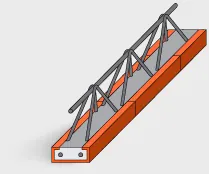
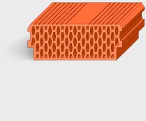
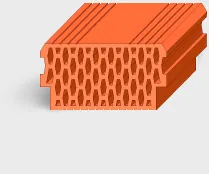
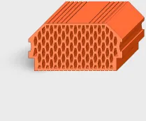
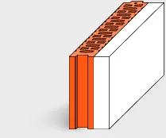
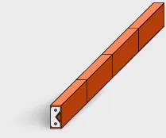
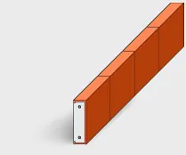

Knpv 3/19/400
Je nosným prvkom keramického stropu.
- Maximálna mnotnosť
- 80 kg
- Rozmery
- 205±5 x 150±5 x 4000 mm

Je nosným prvkom keramického stropu.

Je výplňou keramického stropu.

Je výplňou keramického stropu.

Je výplňou keramického stropu.

Vencovka je tehlový prvok, určený k podstatnému obmedzeniu tepelných mostov obvodových stenových konštrukcií v mieste styku s keramickým stropom.
Tehla vencová s nalepeným izolantom TVI 238 P10

Keramický preklad je určený na preklenutie okenných a dverných otvorov.

Keramický preklad je určený na preklenutie okenných a dverných otvorov.
Chceš cenu na konkrétne množstvo? Zavolaj alebo napíš, cenovú ponuku spravíme zadarmo.
Spočítame spotrebu, pripravíme ponuku a dohodneme dopravu na stavbu. Zvyčajne do niekoľkých dní.